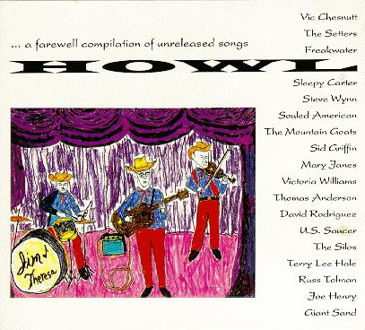

howl!

the picture of john in the booklet...
title: howl!
format: cd
vic chesnutt - goodbye sadness
steve wynn - maria
souled american - suitors bridge
joe henry - honky tonk masquerade
victoria williams - feed the birds
the mountain goats - against agamemnon
mary janes - downtown
sid griffin - the man who invented the blues
the silos - nobody but you
thomas anderson - the bridge
david rodriguez - die gitarre und das meer
u.s. saucer - the plasma is still now
terry lee hale - too much life
giant sand - route 66
russ tolman - dexter gordon
freakwater - lullaby
the setters - you're gonna miss me
sleepy carter - curtains of heaven
please mail any questions/comments/complaints, or just notes hello to:nall@themountaingoats.net